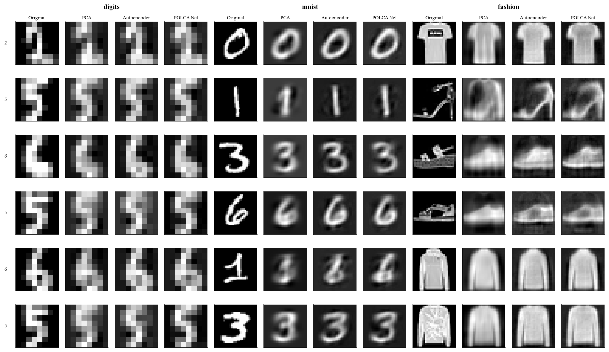
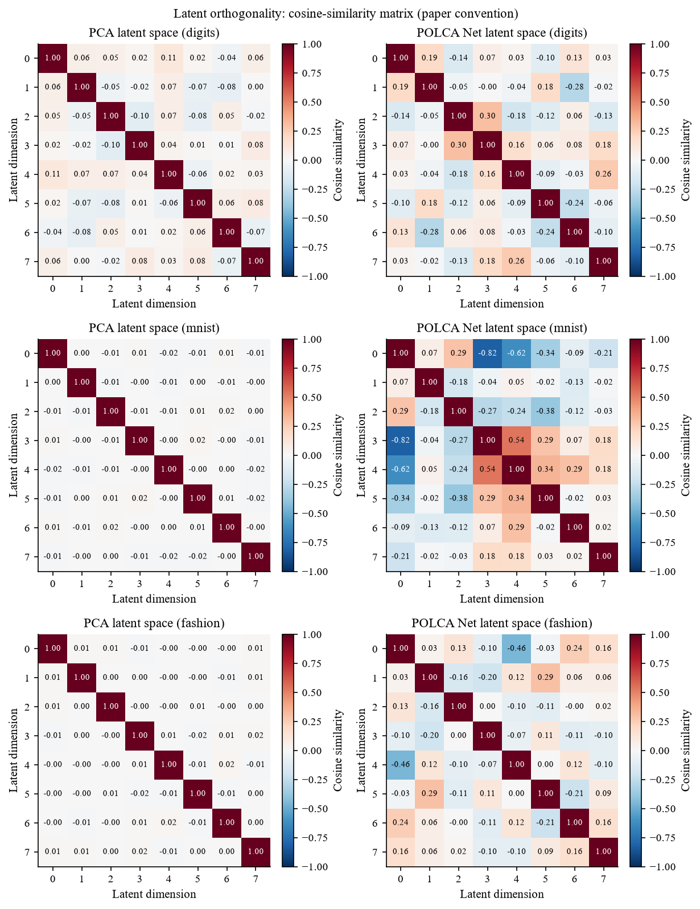
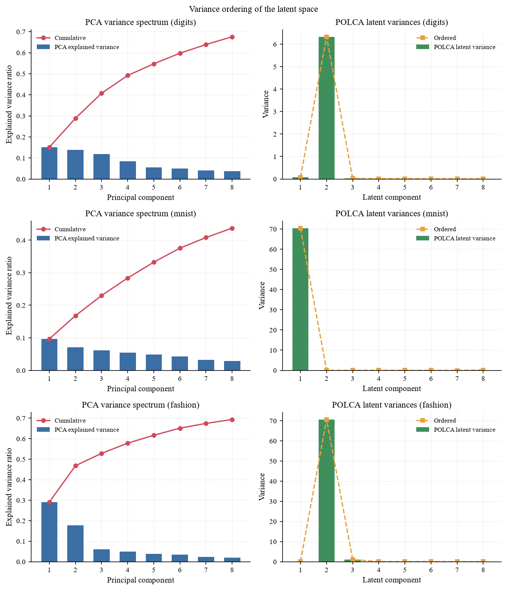
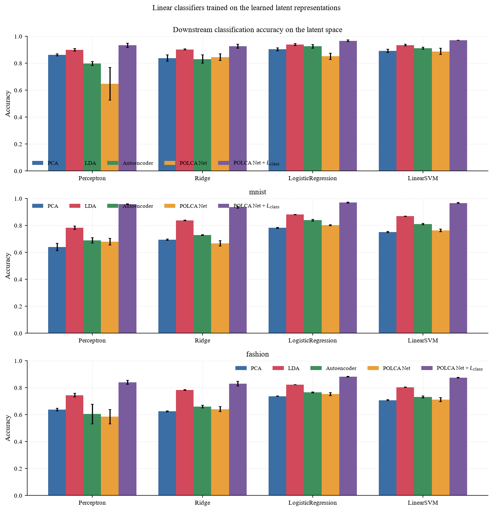
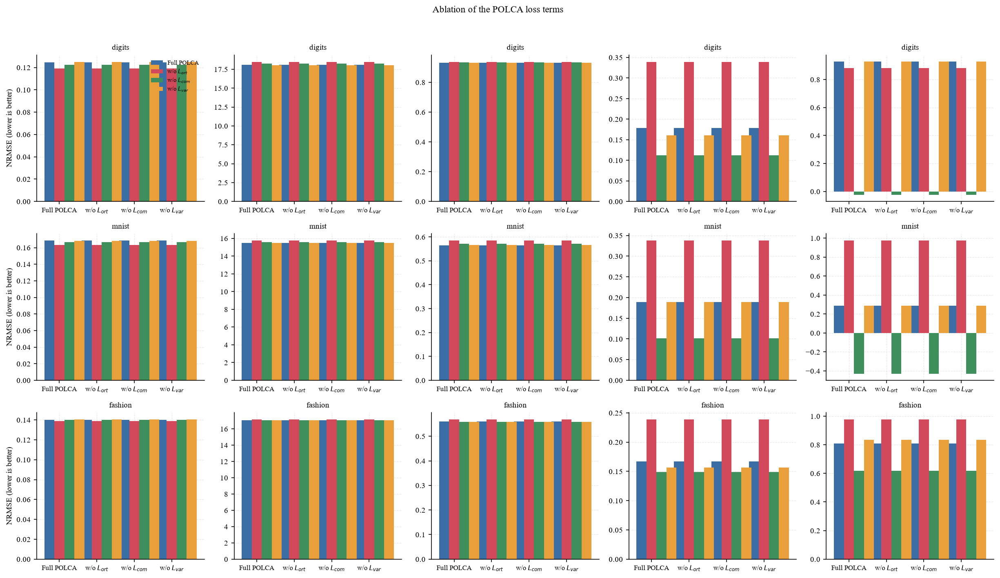

POLCA-Net: Non-linear PCA/LDA with an Orthogonal, Variance-Ordered Latent Space
A faithful, from-scratch reimplementation of Principal Orthogonal Latent Components Analysis (POLCA Net, arXiv:2410.07289, 2024) — an autoencoder that explicitly mimics and extends the capabilities of PCA and LDA to non-linear domains by penalising latent orthogonality and by ordering the latent components by variance.
The Algorithm
Classical PCA finds an orthogonal set of latent directions ordered by explained variance; LDA finds a supervised, discriminant-aligned set. POLCA Net keeps both properties but lets the projection be non-linear, by training an autoencoder with a composite objective that (i) reconstructs the input, (ii) decorrelates the latent components, (iii) orders them by decreasing variance, and (iv) optionally keeps the classes linearly separable.
The five terms of the composite objective are written out below. Every equation on this page is typeset as native MathML, so the browser draws the fraction bars, the summation limits and the radicals itself; the page needs no script, no CDN and no web font. The equations come from the same module the Word report reads, so the document and this page cannot disagree about a formula.
The notation is the one of the paper. Let be the matrix of the L2-normalised latent codes and the normalised code of one sample; the mean of latent component i over the batch is . The three scalar weights , and scale the orthogonality, centre-of-mass and variance terms, and is the exponent of the centre-of-mass weight.
| Term | What it measures | PCA / LDA property it recovers |
|---|---|---|
| Mean squared error between the input and its reconstruction. | Fidelity / the "least squares" side of PCA. | |
| Cross-entropy of a linear head on the latent code (supervised mode only). | The discriminant, class-aligned directions of LDA. | |
| Squared off-diagonal energy of the Gram matrix of the L2-normalised latent codes. | Orthogonality / decorrelation of the principal components. | |
| Variance-weighted index term; small when variance decreases along the latent index. | Variance ordering of the components (the "principal" in principal component). | |
| Total per-component latent variance; normaliser and stabiliser. | Keeps the latent space well scaled; prevents from degenerating. |
Repository Structure
AIassgin3/
├── src/
│ ├── polca/
│ │ ├── __init__.py
│ │ ├── losses.py # L_rec, L_ort, L_com, L_var, L_class, polca_loss
│ │ ├── model.py # POLCANet + Autoencoder baseline
│ │ ├── data.py # digits / MNIST / FashionMNIST loaders
│ │ └── utils.py # seeding, device selection, logging
│ ├── baselines.py # PCAEncoder, LDAEncoder, plain autoencoder
│ ├── metrics.py # NRMSE, PSNR, SSIM, orthogonality, variance ordering
│ ├── train.py # POLCA training loop + ablation switches
│ ├── evaluate.py # 4 linear classifiers, Accuracy / F1
│ └── make_figures.py # all plots
├── tests/
│ ├── smoke_test.py # shape, orthogonality and ordering assertions
│ ├── test_pipeline.py # end-to-end evaluation and figure generation
│ └── final_audit.py # checks every deliverable of the plan is on disk
├── results/
│ ├── metrics.csv # tidy per (dataset, method) metrics
│ ├── summary.json # aggregate statistics
│ ├── ablation.csv # one-term-removed ablation
│ └── figures/ # *.png rendered by make_figures.py
├── report/
│ ├── build_report.py # python-docx generator for the 6-section report
│ ├── math_render.py # LaTeX subset to native Word equations
│ ├── latex_to_mathml.py # LaTeX subset to native MathML for this page
│ ├── equations.py # the equations, shared by the report and the page
│ ├── render_site_math.py # typesets the equations into this page
│ ├── AI_Assignment3_Report.docx
│ └── AI_Assignment3_Report.pdf
├── docs/
│ ├── index.html # this page (GitHub Pages)
│ └── README.md
├── AI_PROMPTS.md # full prompt log for the whole assignment
├── README.md
├── LICENSE # MIT
├── requirements.txt
└── .gitignoreSource Code Showcase
The two files that carry the paper are shown below. They are read verbatim from
src/polca/losses.py and src/polca/model.py in this
repository.
src/polca/losses.py — the objective
"""Loss functions of POLCA Net (arXiv:2410.07289)."""
ALPHA: float = 1e-2 # weight of the orthogonality term
BETA: float = 1e-2 # weight of the center-of-mass term
GAMMA: float = 1e-7 # weight of the variance regulariser
EPS_COM: float = 0.25 # exponent eps used by the center-of-mass term
_EPS: float = 1e-12
def _normalized_latents(latent):
"""Return the L2-normalised latent codes z~ = z / ||z||_2."""
if _is_torch(latent):
norms = latent.norm(p=2, dim=1, keepdim=True)
return latent / norms.clamp_min(_EPS)
latent = np.asarray(latent, dtype=np.float32)
norms = np.linalg.norm(latent, axis=1, keepdims=True)
return latent / np.maximum(norms, _EPS)
def gram_matrix(latent):
"""S = Z~^T Z~ ; a decorrelated latent space gives S = I."""
z = _normalized_latents(latent)
if _is_torch(z):
return z.transpose(0, 1) @ z
return z.T @ z
def orthogonality_loss(latent):
"""
L_ort = 2 / (n (n - 1)) * sum_{1 <= i < j <= n} S_ij^2
Only the strict upper triangle is summed (the matrix is symmetric, so the
lower triangle must not be counted twice); the factor 2/(n(n-1)) then
converts the sum over pairs into the mean squared off-diagonal entry.
"""
s = gram_matrix(latent)
n = s.shape[-1]
if n < 2:
if _is_torch(s):
return s.sum() * 0.0
return np.float32(0.0)
if _is_torch(s):
off_diagonal = torch.triu(s, diagonal=1)
sum_sq = (off_diagonal ** 2).sum()
return 2.0 * sum_sq / (n * (n - 1))
off_diagonal = np.triu(s, k=1)
sum_sq = np.sum(off_diagonal ** 2)
return np.float32(2.0 * sum_sq / (n * (n - 1)))
def latent_variances(latent, unbiased=False):
"""Var_i = E[(z_i - E[z_i])^2] over the batch (population estimator)."""
if _is_torch(latent):
return latent.var(dim=0, unbiased=unbiased)
arr = np.asarray(latent, dtype=np.float32)
ddof = 1 if unbiased and arr.shape[0] > 1 else 0
return np.var(arr, axis=0, ddof=ddof).astype(np.float32)
def variance_loss(latent, unbiased=False):
"""L_var = sum_i E[(z_i - E[z_i])^2]."""
variances = latent_variances(latent, unbiased=unbiased)
if _is_torch(variances):
return variances.sum()
return np.float32(np.sum(variances))
def center_of_mass_loss(latent, eps=EPS_COM, unbiased=False):
"""
L_com = sum_{i=0}^{n-1} i^(1+eps) E[(z_i - E[z_i])^2] / (n * L_var)
The per-dimension variances are L1-normalised through the total variance
L_var and additionally scaled by 1/n. Because the weights i^(1+eps) grow
with the latent index, the term is small when the variance *decreases*
along the latent dimensions (the PCA-like ordering) and large otherwise.
"""
variances = latent_variances(latent, unbiased=unbiased)
n = variances.shape[-1]
if _is_torch(variances):
index = torch.arange(n, device=variances.device, dtype=variances.dtype)
weights = index.pow(1.0 + eps)
total_var = variances.sum()
numerator = (weights * variances).sum()
return numerator / (n * total_var.clamp_min(_EPS))
variances = np.asarray(variances, dtype=np.float32)
weights = np.arange(n, dtype=np.float32) ** (1.0 + eps)
total_var = float(np.sum(variances))
numerator = float(np.sum(weights * variances))
return np.float32(numerator / (n * max(total_var, _EPS)))
def polca_loss(reconstruction, latent, target, labels=None, *,
alpha=ALPHA, beta=BETA, gamma=GAMMA, eps=EPS_COM,
logits=None, classifier=None,
return_components=False):
"""
L_polca = L_rec + L_class + alpha L_ort + beta L_com + gamma L_var
"""
rec = reconstruction_loss(reconstruction, target)
ort = orthogonality_loss(latent)
com = center_of_mass_loss(latent, eps=eps)
var = variance_loss(latent)
if labels is None:
cls = _zeros_like_scalar(rec, 0.0) # unsupervised mode
else:
latent_t = latent if _is_torch(latent) else torch.as_tensor(latent)
if classifier is not None:
class_logits = classifier(latent_t)
elif logits is not None:
class_logits = logits if _is_torch(logits) else torch.as_tensor(logits)
else:
labels_t = labels if _is_torch(labels) else torch.as_tensor(labels)
num_classes = int(labels_t.max().item()) + 1
head = _build_default_classifier(latent_t.shape[-1], num_classes).to(
device=latent_t.device, dtype=latent_t.dtype
)
class_logits = head(latent_t)
cls = classification_loss(class_logits, labels, class_criterion)
total = rec + cls + alpha * ort + beta * com + gamma * var
if return_components:
return POLCALossOutput(total=total, rec=rec, cls=cls, ort=ort,
com=com, var=var,
extra={"latent_variances": latent_variances(latent)})
return totalsrc/polca/model.py — the network
ACTIVATIONS: dict[str, type[nn.Module]] = {
"relu": nn.ReLU, "leaky_relu": nn.LeakyReLU, "elu": nn.ELU,
"gelu": nn.GELU, "silu": nn.SiLU,
"tanh": nn.Tanh, "sigmoid": nn.Sigmoid,
}
def build_mlp(dims, activation="relu", final_activation=False):
"""Build a fully connected MLP, e.g. [784, 64, 32, 8]."""
act_cls = _activation(activation)
layers = []
for index in range(len(dims) - 1):
layers.append(nn.Linear(dims[index], dims[index + 1]))
is_last = index == len(dims) - 2
if not is_last or final_activation:
layers.append(act_cls())
return nn.Sequential(*layers)
class POLCANet(nn.Module):
"""
Autoencoder used by POLCA Net.
No activation is applied to the latent code: the POLCA loss needs
well-defined variances and inner products of the latent vectors, and a
squashing activation would distort both the variance ordering and the
orthogonality measure.
"""
def __init__(self, input_dim, latent_dim=8,
hidden_dims=(64, 32), linear_decoder=False,
activation="relu"):
super().__init__()
self.input_dim = int(input_dim)
self.latent_dim = int(latent_dim)
self.hidden_dims = tuple(int(h) for h in hidden_dims)
self.linear_decoder = bool(linear_decoder)
# encoder: input_dim -> hidden... -> latent_dim (identity activation)
encoder_dims = [self.input_dim, *self.hidden_dims, self.latent_dim]
self.encoder = build_mlp(encoder_dims, activation=activation, final_activation=False)
# decoder: optional single linear layer (PCA-like) or a mirrored MLP
if self.linear_decoder:
self.decoder = nn.Sequential(nn.Linear(self.latent_dim, self.input_dim))
else:
decoder_dims = [self.latent_dim, *reversed(self.hidden_dims), self.input_dim]
self.decoder = build_mlp(decoder_dims, activation=activation, final_activation=False)
def encode(self, x):
return self.encoder(x)
def decode(self, z):
return self.decoder(z)
def forward(self, x):
z = self.encode(x)
x_hat = self.decode(z)
return x_hat, z
class Autoencoder(POLCANet):
"""
Plain autoencoder baseline (no POLCA constraints).
The POLCA-specific regularisers live in the loss, not in the network, so
the baseline simply optimises L_rec (and optionally L_class) with the
same architecture. Keeping the baseline as a subclass guarantees that
both models share exactly the same capacity, which makes the ablation in
the report fair.
"""
def __init__(self, input_dim, latent_dim=8,
hidden_dims=(64, 32), linear_decoder=False,
activation="relu"):
super().__init__(input_dim=input_dim, latent_dim=latent_dim,
hidden_dims=hidden_dims, linear_decoder=linear_decoder,
activation=activation)
self.is_polca = False
@property
def use_polca_constraints(self):
return False- src/polca/losses.py — the five loss terms and the composite objective
- src/polca/model.py — the autoencoder and the plain baseline
- src/polca/data.py — dataset loaders and deterministic splits
- src/metrics.py — NRMSE, PSNR, SSIM and the two PCA-property diagnostics
- src/baselines.py — PCA, LDA and autoencoder baselines behind one interface
- src/train.py — training loop, ablation switches, JSON output
- src/evaluate.py — four linear classifiers, Accuracy and F1, tidy CSV
Experiments
The evaluation follows the paper's protocol: reconstruction quality is measured with NRMSE, PSNR and SSIM, and the quality of the latent space for a downstream task is measured by training four linear classifiers (Perceptron, Ridge, Logistic Regression, Linear SVM) on the latent features and reporting Accuracy and F1.
| Axis | Values |
|---|---|
| Datasets | digits (offline), mnist, fashion_mnist |
| Methods | PCA (k = 8), LDA, Autoencoder, POLCA-Net (unsupervised), POLCA-Net + |
| Reconstruction metrics | NRMSE, PSNR, SSIM |
| Classification metrics | Accuracy, F1 (macro) over Perceptron / Ridge / Logistic Regression / Linear SVM |
| PCA-property diagnostics | Latent orthogonality error, variance-ordering score |
| Ablations | Remove , or individually |
Figures
All figures are produced by src/make_figures.py into
results/figures/ and mirrored into docs/assets/figures/ by
report/sync_site_assets.py, so every image below is served by the
published site itself.

results/figures/reconstruction_grid.png
results/figures/latent_orthogonality.png
results/figures/variance_ordering.png
results/figures/classification_metrics.png
results/figures/ablation.pngResults
The table below is generated from results/metrics.csv by
report/update_site_results.py. A cell is shown as an em dash when the
corresponding measurement is not present in the result file; nothing in this
repository is an invented number.
| Method | NRMSE ↓ | PSNR ↑ | SSIM ↑ | Accuracy ↑ | F1 ↑ |
|---|---|---|---|---|---|
| digits | |||||
| PCA | 0.1554 | 16.17 | 0.8908 | 0.8737 | 0.8660 |
| LDA | 0.3277 | 9.70 | 0.4874 | 0.9183 | 0.9143 |
| Autoencoder | 0.1183 | 18.54 | 0.9376 | 0.8661 | 0.8547 |
| POLCA-Net | 0.1284 | 17.83 | 0.9267 | 0.8076 | 0.7956 |
POLCA-Net + L_class | 0.1312 | 17.64 | 0.9239 | 0.9485 | 0.9470 |
| MNIST | |||||
| PCA | 0.1946 | 14.22 | 0.4497 | 0.7164 | 0.6998 |
| LDA | 0.2347 | 12.59 | 0.3111 | 0.8423 | 0.8382 |
| Autoencoder | 0.1628 | 15.77 | 0.5847 | 0.7663 | 0.7537 |
| POLCA-Net | 0.1697 | 15.41 | 0.5593 | 0.7277 | 0.7087 |
POLCA-Net + L_class | 0.1855 | 14.63 | 0.5218 | 0.9570 | 0.9566 |
| FashionMNIST | |||||
| PCA | 0.1633 | 15.74 | 0.4680 | 0.6765 | 0.6536 |
| LDA | 0.2434 | 12.27 | 0.3542 | 0.7882 | 0.7721 |
| Autoencoder | 0.1362 | 17.32 | 0.5763 | 0.6902 | 0.6719 |
| POLCA-Net | 0.1431 | 16.89 | 0.5502 | 0.6723 | 0.6511 |
POLCA-Net + L_class | 0.1582 | 16.02 | 0.5182 | 0.8567 | 0.8531 |
Report
The full write-up (six sections, as required by the assignment brief) is available in Word and PDF:
The document is generated by report/build_report.py, which reads every
number from results/ and refuses to emit a value that is not present
there.
How the AI Did It
The assignment requires an AI tool to perform the algorithm search, the programming
and the report writing. The complete prompt log — every prompt issued, what
the agent answered, what was accepted and what had to be corrected — is
recorded in AI_PROMPTS.md and forms
the basis of Sections 1, 3 and 5 of the report.
- Decompose the brief — the agent turned the assignment into nine sub-tasks and stated what the student must verify by hand.
- Search — six web queries produced seven candidate algorithms (UMAP, t-SNE, Kernel PCA, Diffusion Maps, σ-PCA, Deep Factorized Metric Learning, POLCA Net).
- Select — a nine-column comparison table; POLCA-Net wins because the paper itself frames it as an extension of PCA and LDA to non-linear domains and reports on a reproducible image benchmark.
- Read the paper — the five loss equations, the hyper-parameters and the evaluation protocol were extracted verbatim; two genuinely ambiguous conventions were flagged rather than guessed.
- Implement — one prompt per module, each restating the exact formulas so the agent could not substitute a plausible-looking approximation.
- Verify and correct — shape assertions, an analytic orthogonality check (an exactly orthogonal latent set must give ≈ 0), a variance-ordering check, a degenerate-batch check, a gradient-coverage check and a determinism check. Seven real bug classes were caught this way, including a double-counted symmetric off-diagonal sum in , an L2 normalisation applied to the wrong axis, and a
channel_axisargument that made the SSIM metric silently compute the similarity of an image's rows instead of the image. - Run and validate — three seeds; comparisons whose spread exceeds the gap are flagged as inconclusive instead of being reported as wins.
- Write the report — generated from the metrics files, with a guard that forbids inserting any number that is not in
results/.
Read AI_PROMPTS.md for the verbatim
prompts, including the points where the agent was wrong and had to be corrected.